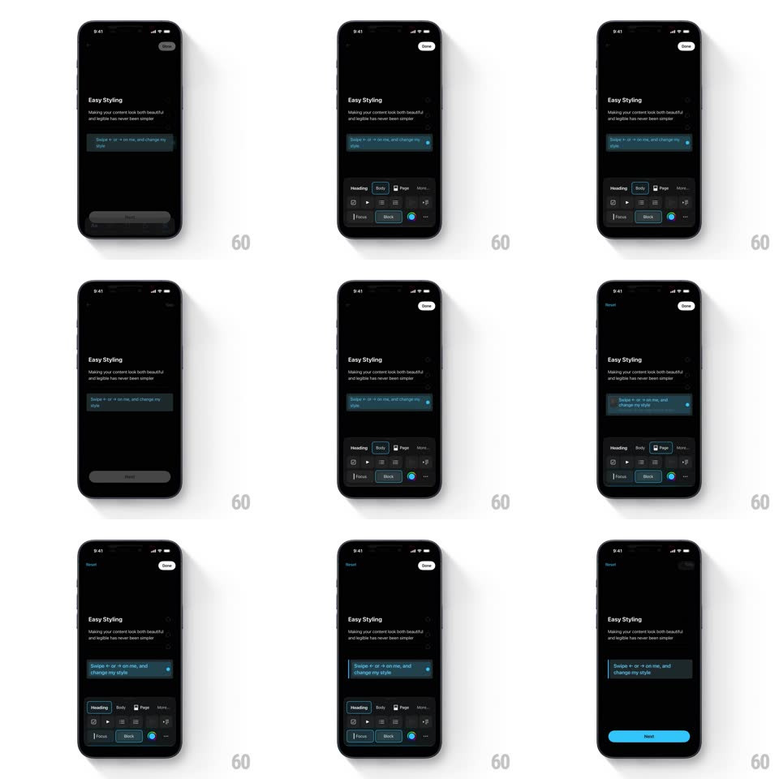

Media
Frame-by-frame

Rebuild this interaction 1:1: Craft's "Easy Styling" coachmark - swipe left or right on the highlighted block and its style cycles while the bottom toolbar's selection follows.

Rebuild this interaction 1:1: Craft's "Easy Styling" coachmark - swipe left or right on the highlighted block and its style cycles while the bottom toolbar's selection follows. ## Integration Integration: stack-agnostic spec - springs given as stiffness/damping, timed motions as duration + curve; map every value to your framework and animation library of choice. ## Scene Craft onboarding page, black: the "Easy Styling" heading with the line "Making your content look both beautiful and legible has never been simpler", a teal-highlighted coachmark block reading "Swipe ← or → on me, and change my style", and a bottom styling toolbar - tab row (Heading, Body, Page, More...) over rows of style controls (Focus, Block, color dots). A "Done" pill sits top-right. ## Motion spec Pattern: horizontal swipe on a block cycling its style with a tracking toolbar. - The coachmark block pulses its teal highlight (border opacity 0.6 -> 1, 1.2s loop) until first touch. - A horizontal drag on the block tracks 1:1 with a slight resistance curve; past 40pt the swipe commits and the block flips to the next style: the text crossfades (150ms) as the block does a quick lateral settle (spring ~320/20, 8px overshoot in the swipe direction). - Each swipe advances one step through the style cycle (body -> heading -> page styles); the toolbar below updates in the same beat: the active tab pill slides (200ms) and the matching style button raises its highlight (150ms). - After the first successful swipe, the coachmark text swaps to plain content (200ms) and the block's teal glow retires (300ms fade). - "Done" stays available the whole time; the toolbar never moves or hides during swipes. ## Calibration - One swipe equals exactly one style step - no multi-skip on fast flings. - The toolbar is a mirror of the block state, not a second input: it animates, it doesn't get tapped here. ## Reduced motion Style changes crossfade (200ms) without the lateral settle; toolbar pill still slides. ## Don't miss - The swipe arrows live inside the coachmark text itself - the instruction is the content. - The teal highlight is the block's focused state in Craft's exact cyan-teal, not a generic blue.